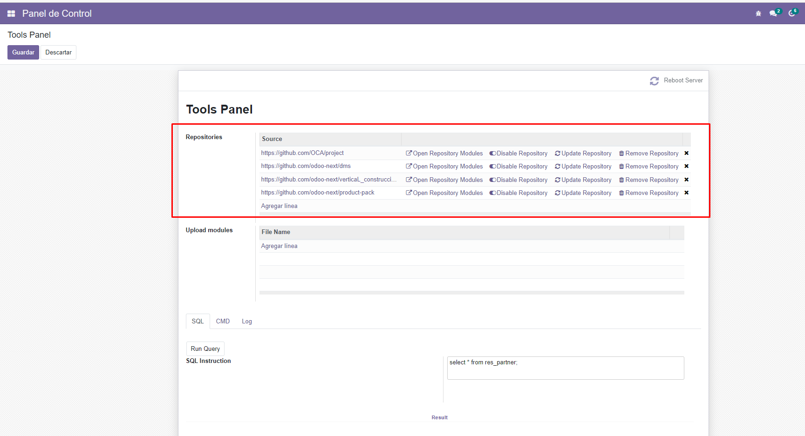
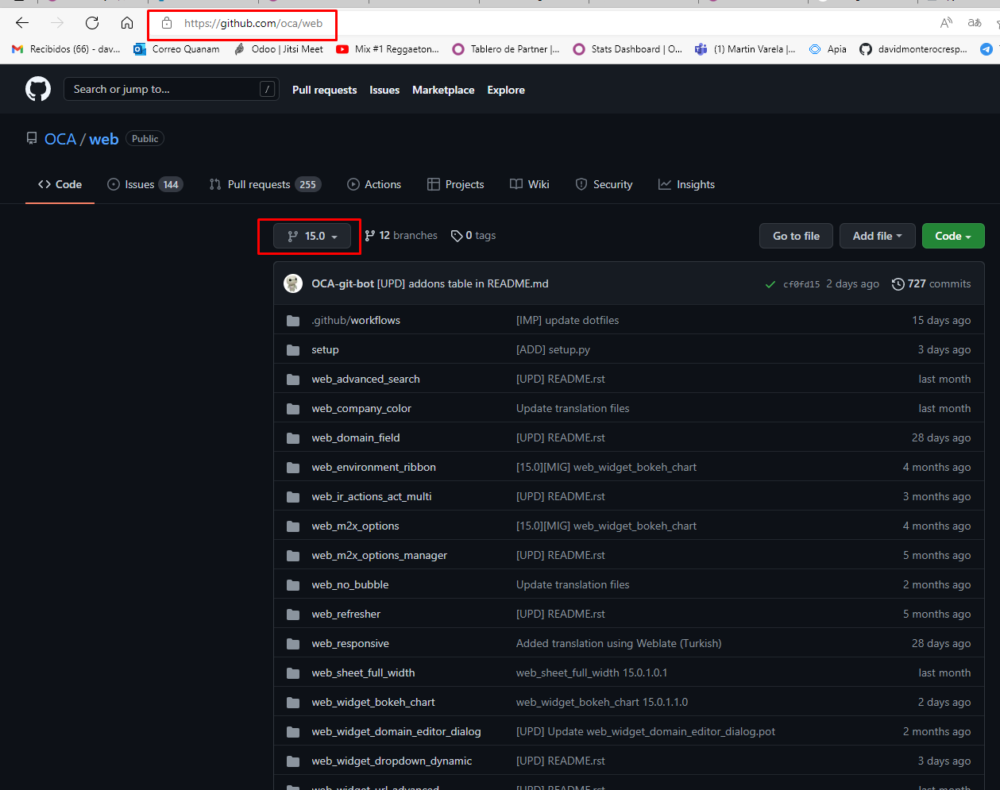
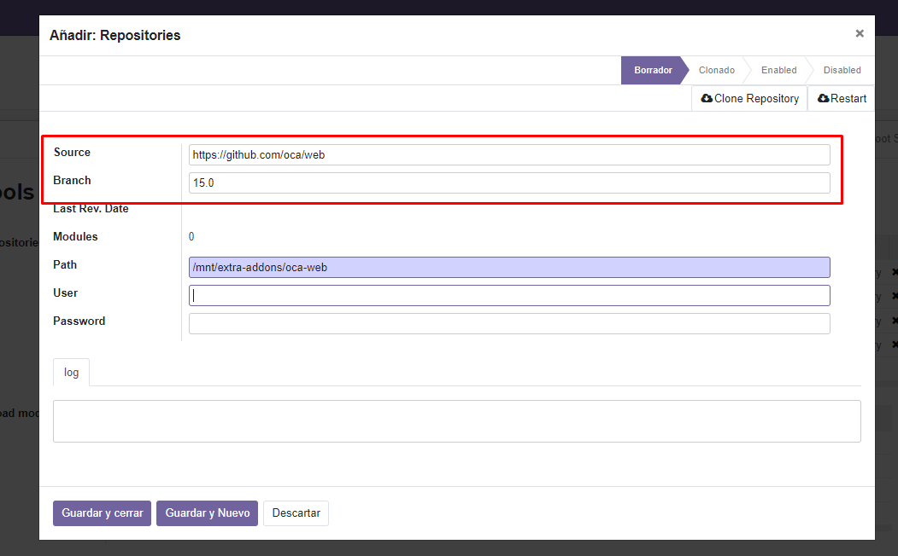
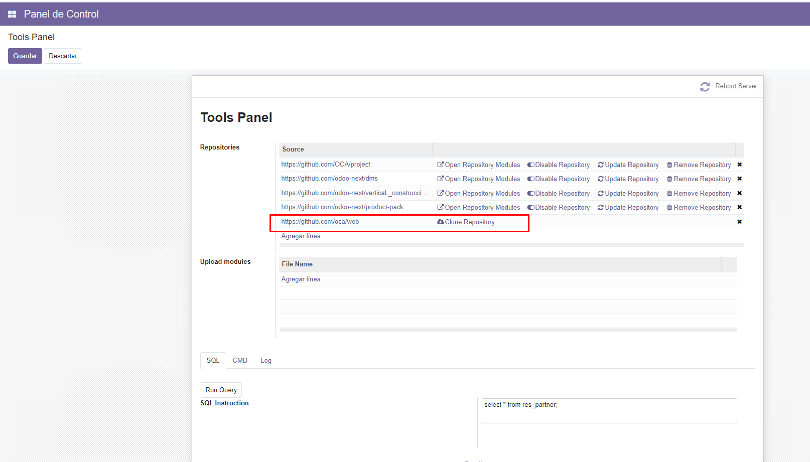
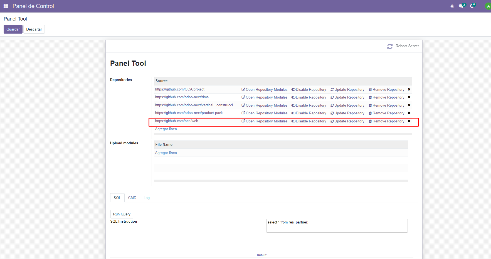
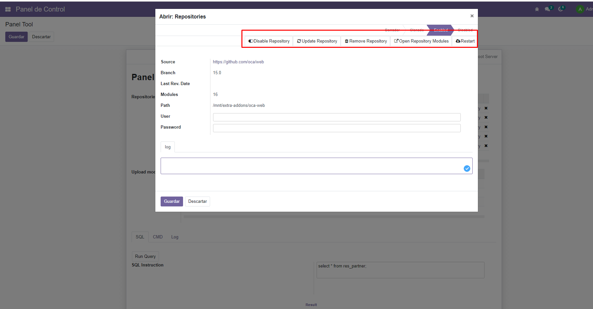
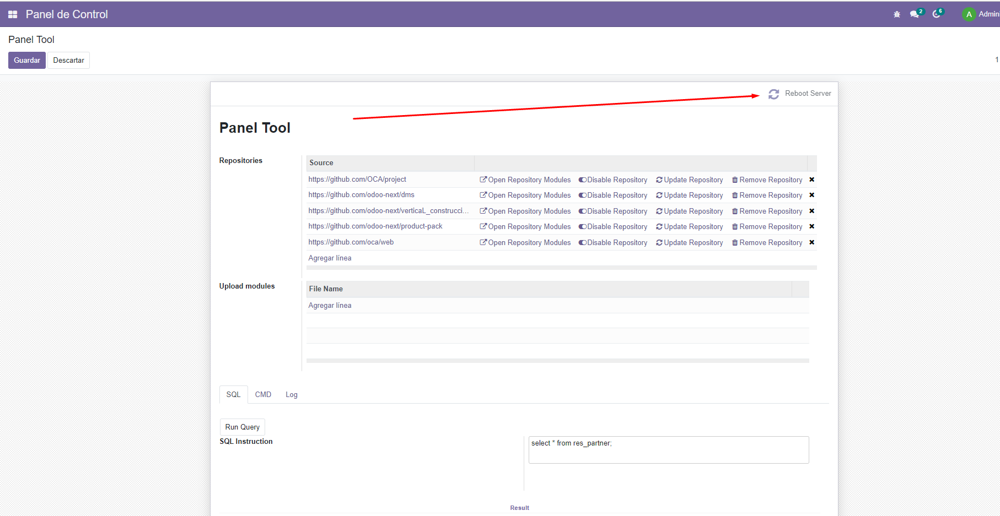
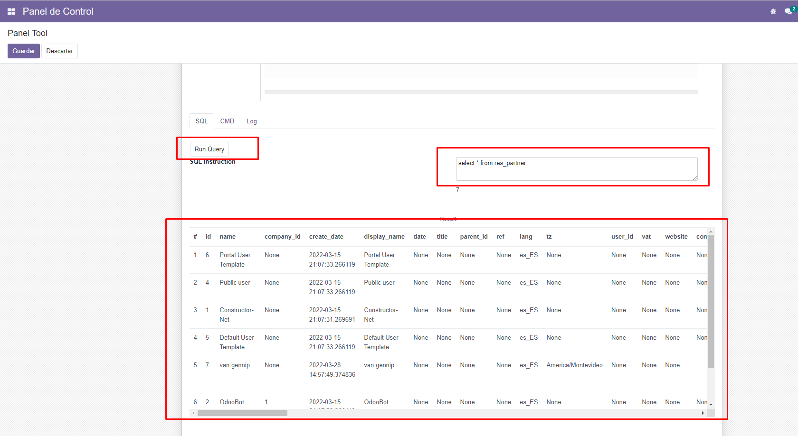
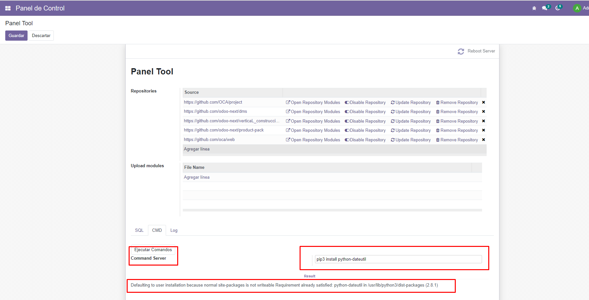

With this module you can manage all the repositories where your Odoo modules are
located.Supports private and public repositories. You can use GitLab , GitHub or any Git based system.
Every minute an automated task is executed that checks commits uploaded to the branch configured in the module and if there are changes, the module pulls all the new changes.
If there are changes in the repository, the server is restarted and only the modules that have changed are updated.
This facilitates the deployment of updates since only the developer must push his changes to the branch configured in the module and in a minute those changes will be reflected.
Upload modules in zip format to the Odoo server. With this module you can download modules from the Odoo Store in zip format and easily upload them to your server
Restar Server from Backend
Run sql queries from Backend
Execute commands to the Server

(Example) Cloning a github repository

Copy the repository url

Clone the repository

Enable the repository

Operations

Operatiosn:
Update the list of modules.
You can see the modules that belong to that repository.
Disable repository.
Update the repository
Remove the repository
Logs
Restar Server from Backend

Run sql queries from Backend

Execute commands to the Server

Upload modules in zip format to the Odoo server. With this module you can download modules from the Odoo Store in zip format and easily upload them to your server